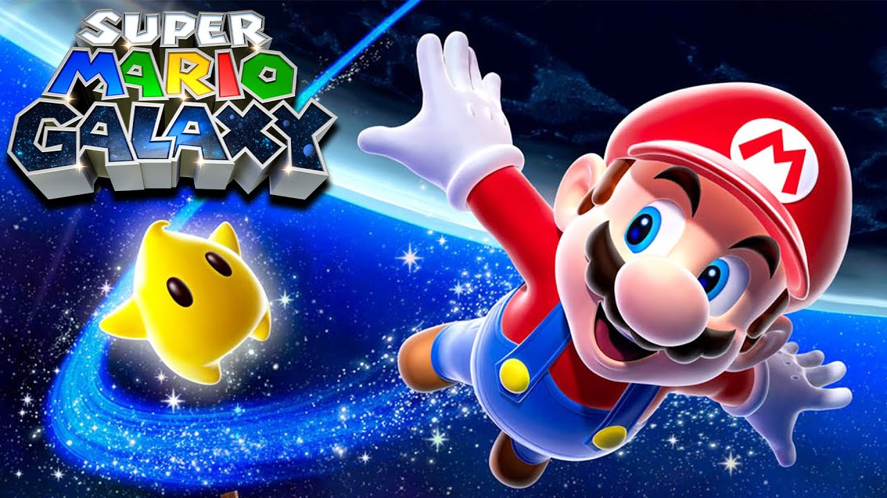

A História do Mario Galaxy
imagem do jogo super Mario Galaxy
Super Mario Galaxy é um jogo de ação e aventura de 2007 desenvolvido e publicado pela Nintendo para o Wii. É o terceiro jogo 3D da série Super Mario. Como Mario, o jogador embarca em uma busca para resgatar a Princesa Peach, salvar o universo de Bowser, e coletar 120 Power Stars, após o qual o jogador pode jogar o jogo como Luigi para uma experiência mais difícil. Os níveis no jogo consistem em galáxias cheias de planetas e mundos menores, com diferentes variações de gravidade, o elemento central da jogabilidade. O personagem do jogador é controlado usando o Wii Remote e Nunchuk, e completa missões, luta contra chefes e atinge certas áreas para coletar Power Stars. Certos níveis usam as funções Wii Remote baseadas em movimento.
Nintendo EAD Tokyo começou a desenvolver Super Mario Galaxy após o lançamento de Donkey Kong Jungle Beat no final de 2004, quando Shigeru Miyamoto sugeriu que a Nintendo deveria encomendar um jogo mario em grande escala. O conceito para o uso de plataformas esféricas originou-se de ideias usadas em Super Mario 128, uma demonstração tecnológica da GameCube mostrada no Nintendo Space World em 2000. A Nintendo tinha como objetivo fazer o jogo apelar para jogadores de todas as idades, e a equipe tinha mais liberdade em projetá-lo em comparação com outros jogos de Super Mario por causa do cenário espacial. A trilha sonora foi composta por Mahito Yokota e Koji Kondo, usando uma orquestra sinfônica pela primeira vez na série.
Super Mario Galaxy foi um sucesso de crítica e comercial, aclamado como um dos melhores jogos da série e um dos maiores videogames de todos os tempos. Na época de seu encerramento em 2019, Super Mario Galaxy foi o jogo mais bem avaliado de todos os tempos no site gamerankings. Recebeu excelente aclamação da crítica, citando os gráficos do jogo, mecânica de gravidade e design de nível, trilha sonora, configuração e história. Ganhou vários prêmios de grandes publicações de jogos, incluindo vários títulos de "Jogo do Ano", e se tornou o primeiro título da Nintendo a ganhar o Prêmio BAFTA de Melhor Jogo. [3] O jogo é o nono jogo wii mais vendido em todo o mundo com vendas de 12,80 milhões. O jogo foi lançado como um título do Nintendo Selects em 2011, como um download através da Wii U's eShop em 2015, no Nvidia Shield na China em 2018, e como parte da coleção Super Mario 3D All-Stars para o Nintendo Switch em 2020. Uma sequência, Super Mario Galaxy 2, foi lançada para o Wii em 2010.
Super Mario Galaxy é ambientado no espaço sideral,[4][5] onde Mario viaja através de diferentes galáxias para coletar Estrelas do Poder, ganhos completando missões, derrotando um chefe ou alcançando uma área específica. [4][6] Cada galáxia contém planetoides e estruturas orbitando para o jogador explorar. [4] Cada objeto astronômico tem sua própria força gravitacional, permitindo que o jogador circunda completamente os planetoides, andando de lado ou de cabeça para baixo. [7][8] O jogador geralmente pode saltar de um objeto independente e cair em direção a outro nas proximidades. Embora a jogabilidade principal esteja em 3D, existem várias áreas no jogo em que os movimentos do jogador são restritos a um plano bidimensional. [9]
O principal centro do jogo é o Comet Observatory, uma nave espacial que contém seis cúpulas que fornecem acesso à maioria das 42 galáxias disponíveis do jogo, com cada cúpula, exceto uma segurando cinco. [6] Cinco cúpulas terminam com um nível de chefe no qual o objetivo é derrotar Bowser ou Bowser Jr. e ganhar uma Estrela de Poder especial, conhecida como Uma Grande Estrela, que dá ao jogador acesso à próxima cúpula. [6] O jogador só tem acesso a uma galáxia quando começa o jogo; à medida que mais Estrelas do Poder são coletadas, mais galáxias e estrelas se tornam disponíveis. O jogador é premiado com a capacidade de jogar como Luigi depois de colecionar 120 Power Stars como Mario. Uma vez que 120 Power Stars são coletados com ambos os personagens, o jogador é recompensado com mais um desafio que, após a conclusão, premia o jogador com as duas últimas estrelas, e duas fotos comemorativas dos personagens que podem ser enviados para o Wii Message Board. [10]